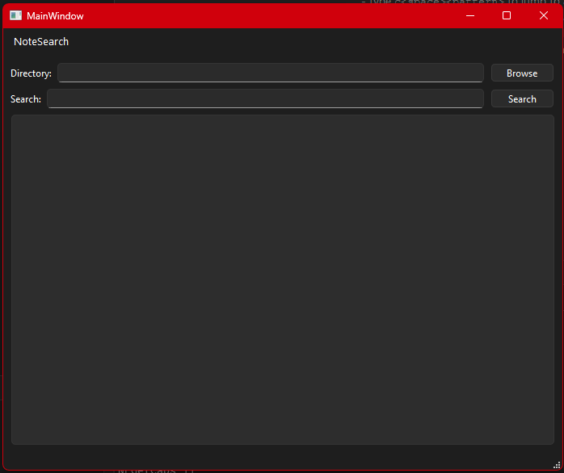
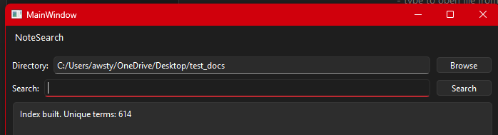
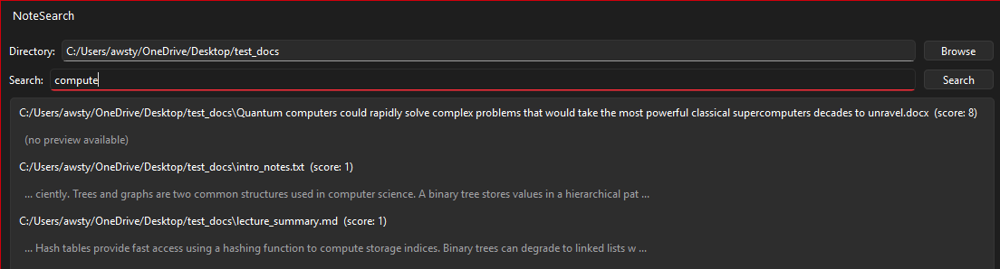

NoteSearch Part 3: Extending the Engine to Word Documents
Where We Left Off
At the end of Part 2, NoteSearch was a functioning desktop application capable of indexing and searching through .txt and .md files. The backend was pure C++, the Qt UI was a clean shell around it, and the two were deliberately kept separate. The natural next step was extending the indexer to handle richer document formats — starting with .docx.
The Challenge with Word Documents
Word documents aren’t a simple text format. A .docx file is actually a ZIP archive containing a collection of XML files. The document content lives inside word/document.xml, wrapped in a hierarchy of XML tags. To extract searchable text, you have to unzip the archive, locate that file, parse the XML, and pull out the text nodes — all before tokenization can even begin.
This required two external libraries: miniz for ZIP extraction and pugixml for XML parsing. Both are pure C++ with no external dependencies, which kept the backend clean and Qt-free.
Keeping the Architecture Clean
The same separation principle from Part 2 applied here. The new DocxParser lives entirely in the backend — it takes a file path, does its work, and returns a plain std::string of extracted text. Qt never touches it. The Indexer calls it the same way it calls the plain text reader, and the result flows through the same tokenize() pipeline as everything else.
From the Indexer’s perspective, a .docx file is just another source of text. The file type handling is a single branch:
if (ext == ".txt" || ext == ".md") {
processFile(entry.path().string());
} else if (ext == ".docx") {
processDocx(entry.path().string());
}Everything downstream — tokenization, indexing, scoring, snippet extraction — is completely unchanged.
Integrating the Libraries
Getting miniz and pugixml into the project was more involved than expected. Both libraries ship as multiple files rather than true single-header drops, and the CMake configuration needed explicit source file declarations and language properties to compile the C files correctly in a C++ project. Downloading the full release packages rather than individual files resolved most of the integration friction.
Once the libraries were correctly wired into CMakeLists.txt, the actual DocxParser implementation was straightforward — open the ZIP, locate word/document.xml, extract it into memory, parse the XML with pugixml, walk the <w:t> nodes, and concatenate the text content.
The Application
Here is the main NoteSearch window after indexing a directory containing a mix of .txt, .md, and .docx files:


The interface is intentionally minimal consisting of a directory picker, a search bar, and a results list. After selecting a folder the index builds immediately and the result area confirms how many unique terms were found across all supported file types.
Searching across a directory containing both plain text and Word documents returns results from all file types together, ranked by relevance score:

Each result shows the file path, its relevance score, and a snippet preview showing where the term appears in the document. The word count index confirms the breadth of what was indexed.
Reflection
The architectural decision to keep the backend Qt-free continued to pay dividends here. Adding an entirely new file format required no changes to the UI, no changes to the search logic, and no changes to the tokenizer. The only new code was the parser itself and a single branch in the indexer.
The library integration was the roughest part of this phase. Working with C libraries inside a C++ CMake project on Windows with MinGW introduced several friction points around file discovery and compilation flags that wouldn’t have been issues on Linux. The lesson is to always download full library releases rather than cherry-picking individual files from a repository.
What’s Next
PDF support is the next planned extension, following the same pattern — a pure C++ PdfParser in the backend, no Qt involvement, same tokenization pipeline. Once both formats are supported the application will cover the full range of personal note formats most people actually use.
Repository
Full code: https://github.com/AwstynC/NoteSearch